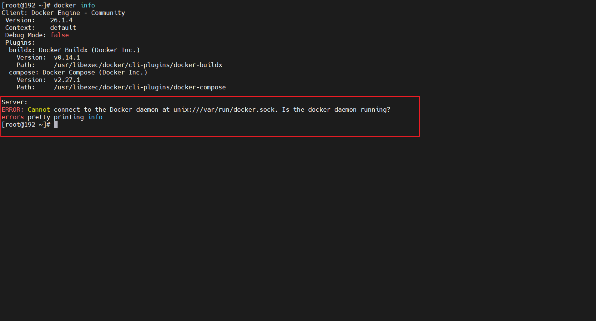

下载
从阿里云下载 docker-ce 仓库，并将仓库文件移动到 /etc/yum.repos.d/ 目录下
1 2 sudo curl -O https://mirrors.aliyun.com/docker-ce/linux/centos/docker-ce.reposudo mv docker-ce.repo /etc/yum.repos.d/
刷新yum缓存
1 2 sudo yum clean allsudo yum makecache fast
查看 docker-ce 源是否添加成功
安装
安装 docker-ce
1 sudo yum install docker-ce -y
执行命令查看是否安装成功
如果出现这种错误，说明没有运行

docker 的启动与停止
1 2 3 4 5 6 7 8 9 10 11 12 13 service docker start systemctl daemon-reload systemctl restart docker service docker restart systemctl stop docker service docker stop
常用docker命令
查看镜像
搜索镜像
拉取镜像
按镜像id删除镜像
删除所有镜像
1 docker rmi $(docker images -q)
查看正在运行的容器
查看所有容器
查看最后一次运行的容器
查看停止的容器
1 docker ps -f status=exited
创建容器
1 2 3 4 5 6 7 8 9 10 11 12 13 docker run -i：表示运行容器 -t：表示容器启动后会进入其命令行。加入这两个参数后，容器创建就能登录进去。即分配一个伪终端。交互式 --name :为创建的容器命名。 -v：表示目录映射关系（前者是宿主机目录，后者是映射到宿主机上的目录），可以使用多个－v做多个目录或文件映射。注意：最好做目录映射，在宿主机上做修改，然后共享到容器上。 -d：在run后面加上-d参数,则会创建一个守护式容器在后台运行（这样创建容器后不会自动登录容器，如果只加-i -t两个参数，创建后就会自动进去容器）。 -p：表示端口映射，前者是宿主机端口，后者是容器内的映射端口。可以使用多个-p做多个端口映射
创建并进入容器，退出停止(交互式)
1 docker run -it --name=容器名称 镜像名称:标签 /bin/bash
退出当前容器
守护式创建容器
创建但不登陆
1 docker run -di --name=容器名称 镜像名称:标签
创建并登陆
1 docker exec -it 容器名称(或者容器id ) /bin/bash
停止与启动容器
停止容器
1 docker stop 容器名称(或者容器id )
启动容器
1 docker start 容器名称(或者容器id )
文件拷贝
将文件拷贝到容器内
1 docker cp 需要拷贝的文件或目录 容器名称:容器目录
将文件从容器内拷贝出来
1 docker cp 容器名称:容器目录 需要拷贝的文件或目录
目录挂载
在创建容器的时候，将宿主机的目录与容器内的目录进行映射，这样就可以通过修改宿主机某个目录的文件从而去影响容器。创建容器添加-v参数 后边为 宿主机目录:容器目录，例如：
1 docker run -di -v /usr/local/myhtml:/usr/local/myhtml --name=mycentos centos:7
迁移与备份
将容器保存为镜像
将镜像保存为 tar 文件
1 docker save -o image.tar 镜像名称
恢复镜像
1 2 docker load -i image.tar
私有仓库搭建与配置
拉取私有仓库镜像
启动私有仓库容器
1 docker run -di --name=registry -p 5000:5000 registry
打开浏览器，访问 http://宿主机ip:5000/v2/_catalog，返回{“repositories”:[]}表明私有仓库搭建成功，并且内容为空
修改daemon.json
1 vi /etc/docker/daemon.json
添加或修改以下内容，而后保存退出，此步用于让 docker 信任私有仓库地址
1 { "insecure-registries" : [ "宿主机ip:5000" ] }
重启docker服务
1 systemctl restart docker
镜像上传至私有仓库
标记此镜像为私有仓库的镜像
1 docker tag redis 宿主机ip:5000/redis
再次启动私有仓库
上传标记的镜像到私有仓库
1 docker push 宿主机ip:5000/redis
可能会出现的错误或警告
Warning: Stopping docker.service, but it can still be activated by: docker.socket
一般出现在停止docker运行的时候，原因是 Docker 在关闭状态下被访问自动唤醒机制，意味如果试图连接到 docker socket，而 docker 服务没有运行，系统将自动启动docker。
解决办法
方法1、(推荐)
1 systemctl stop docker.socket
方法2、
删除docker.socket
1 rm -f /lib/systemd/system/docker.socket
这种错误是因为国内把docker的官方源墙了，所以访问不了。
开始换源
而后进入/etc/docker修改daemon.json，如果没有这个json文件就新建一个
1 2 3 4 5 cd /etc/dockerls touch daemon.json
编辑daemon.json
添加以下配置
1 2 3 4 5 6 7 8 9 10 11 12 13 14 15 16 17 18 19 { "registry-mirrors" : [ "https://docker.1panel.live" , "https://hub.rat.dev" , "https://docker.registry.cyou" , "https://docker-cf.registry.cyou" , "https://dockercf.jsdelivr.fyi" , "https://docker.jsdelivr.fyi" , "https://dockertest.jsdelivr.fyi" , "https://docker.nju.edu.cn" , "https://docker.mirrors.sjtug.sjtu.edu.cn" , "https://mirror.iscas.ac.cn" , "https://docker.rainbond.cc" , "https://dockerhub.icu" , "https://hub.uuuadc.top" , "https://docker.anyhub.us.kg" , "https://docker.awsl9527.cn" ] }
然后重启docker即可，上面的那些源有可能某些失效了，视情况决定是否删除。
1 2 3 service docker restart snap restart docker
Job for docker.service failed because start of the service was attempted too often. See “systemctl status docker.service” and “journalctl -xe” for details. To force a start use “systemctl reset-failed docker.service” followed by “systemctl start docker.service” again.
这个错误有可能是daemon.json文件里面可能有语法错误导致启动不了，检查这个文件哪里写错了。
Cannot connect to the Docker daemon at unix:///var/run/docker.sock. Is the docker daemon running?
这个错误是没有启动docker，启动一下就行了
1 2 3 4 systemctl start docker service docker restart snap restart docker
Warning: docker.service changed on disk. Run ‘systemctl daemon-reload’ to reload units.
根据提示执行命令即可
 wechat
wechat alipay
alipay